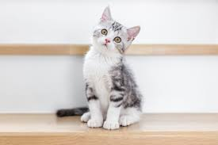

Soninho
Gato é flagrado dormindo 18 horas por dia e vira exemplo de vida tranquila

Pãozinho
Felino amassando pãozinho conquista a internet e derrete muitos corações..

Menos Estresse
Estudo revela que carinho em gatos reduz o estresse e melhora bem o humor!

Personalidade
São misteriosos e independentes, mas demonstram carinho quando querem

Costumes
Ronronar, amassar pãozinho e se espreguiçar passam conforto e afeto.

Aparência
Gatos têm olhos grandes, brilhantes e cheios de expressão que encantam.

Por que a maioria dos gatos não tem raça definida?
- Entenda a origem dos felinos domésticos e por que o “SRD” é tão comum.

Por que a maioria dos gatos tricolores são fêmeas?
- A genética dos gatos tricolores faz com que a grande maioria deles seja do sexo feminino.

Dieta de gatos: o que realmente importa na alimentação felina
- Saiba como escolher a dieta certa para manter seu gato saudável.